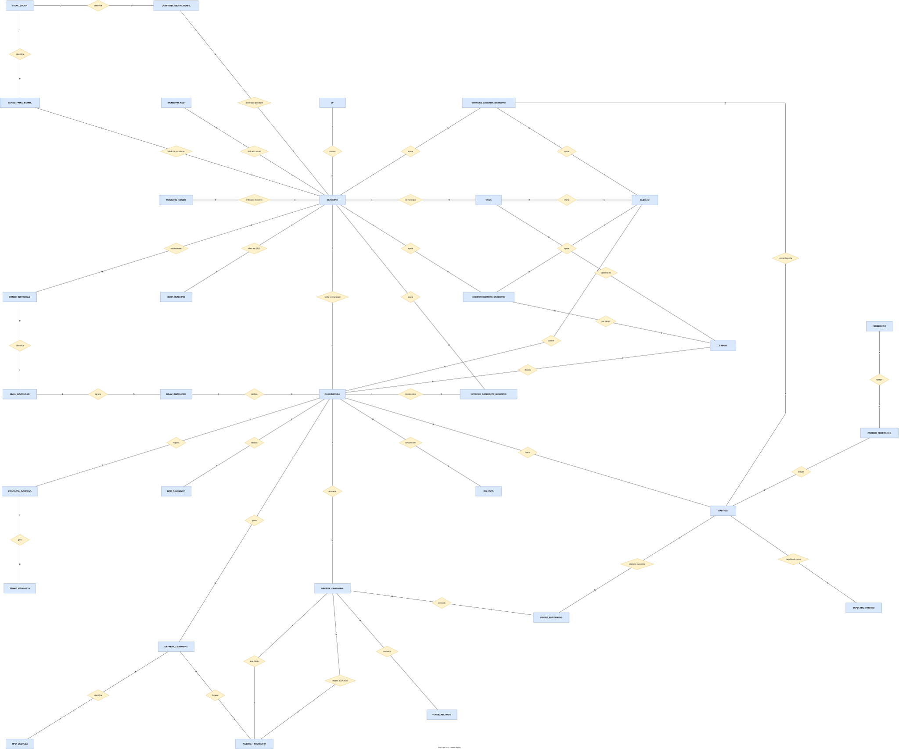
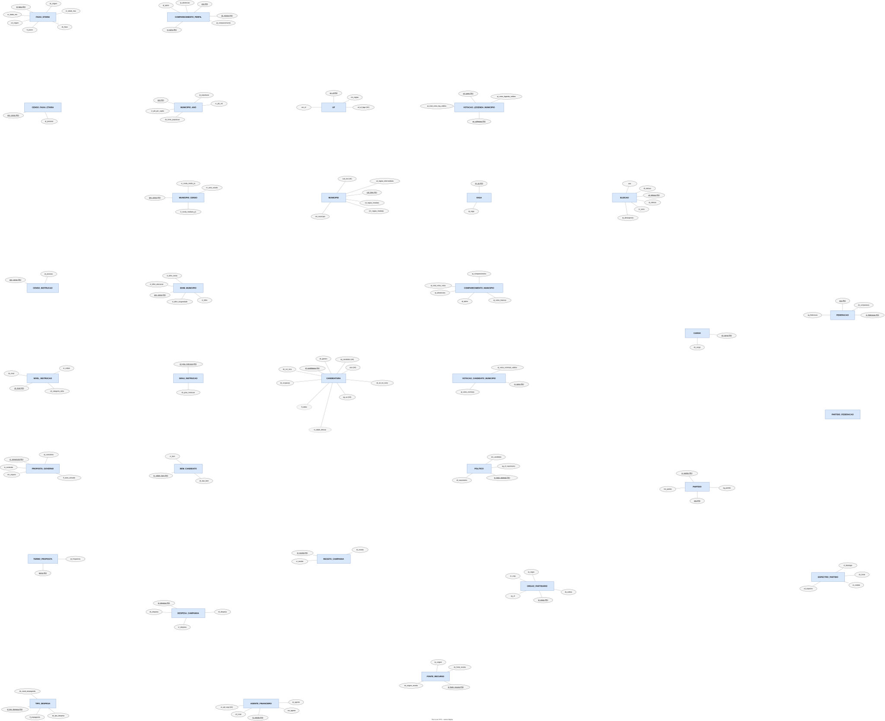

Análise de Candidatos
Dossiê do projeto
DiscentesEduardo Melo de CarvalhoEnrico da Rocha Santos TeixeiraMaria Eduarda Farias GomesDavi Sousa Soares
Sumário
1. Introdução
Do que se trata
O projeto investiga candidaturas e resultados eleitorais brasileiros, com atenção ao Piauí, cruzando dados do Tribunal Superior Eleitoral (TSE) com indicadores municipais do Instituto Brasileiro de Geografia e Estatística (IBGE). O banco analítico planejado organiza candidaturas, votos, financiamento, perfil do eleitorado e contexto socioeconômico para responder a 12 perguntas. O projeto usa DuckDB e notebooks para preparação e análise. Os resultados das perguntas ainda dependem da carga e das consultas; este dossiê documenta o desenho do banco, não resultados calculados.
Objetivo
Estruturar uma base relacional rastreável que permita comparar eleições, municípios, partidos e candidatos, preservando a granularidade e a procedência de cada informação. Cada pergunta indica o resultado que uma consulta futura deverá entregar.
APIs e fontes
| Fonte | Acesso planejado | Uso no projeto |
|---|---|---|
| TSE — Portal de Dados Abertos | Arquivos públicos ZIP/CSV; o catálogo CKAN aponta para os recursos, não há API de consulta tabular para estas bases. | Candidaturas, votação, vagas, comparecimento, contas e propostas. |
| IBGE — API SIDRA | Respostas JSON por tabela, variável, período e nível geográfico. | População (6579), escolaridade (10061) e idade (9514/9606). |
| IBGE — PIB dos Municípios | Planilha XLSX do FTP do IBGE. | PIB per capita e hierarquia geográfica municipal. |
| IBGE — API de malhas | GeoJSON municipal. | Visualização espacial do Piauí e do país. |
| PNUD / Atlas Brasil | Fonte complementar de IDHM municipal histórico. | Contexto comparativo; o IDHM municipal não é anual nem substitui o PIB per capita. |
A ponte oficial municipio_tse_ibge relaciona os códigos municipais. cod_tse deve ser texto de cinco caracteres para preservar zeros à esquerda. As fontes e os procedimentos de coleta estão em docs/fontes-de-dados.md, docs/esquemas.md e scripts/coleta_*.py.
2. Perguntas — o que cada consulta deverá responder
| # | Pergunta | Resposta esperada | Dados centrais |
|---|---|---|---|
| Q1 | Quanto custa disputar uma cadeira? | Despesa total de campanha por vaga em disputa, comparando território, cargo e eleição. | Despesas, candidaturas, vagas. |
| Q2 | Gastar mais aumenta a taxa de sucesso? | Relação entre gasto por candidatura e proporção de eleitos, com recortes comparáveis. | Despesas, candidaturas, situação de totalização. |
| Q3 | Como o perfil municipal se relaciona com partidos, eleitos e abstenção? | Indicadores municipais, votação e participação lado a lado por município e eleição. | Município-ano, votos, partidos, comparecimento. |
| Q4 | A instrução do candidato acompanha a escolaridade da população? | Distribuição de escolaridade de candidatos em comparação com o Censo 2022 no território. | Candidaturas, Censo de instrução. |
| Q5 | Como se distribuem os votos de legenda? | Votos de legenda por partido e, quando aplicável, por federação, município e eleição. | Votação de legenda, partido, federação. |
| Q6 | Quais temas aparecem nas propostas de governo? | Termos recorrentes e sua frequência em textos de propostas, com recorte por candidatura. | PDFs de propostas, termos extraídos. |
| Q7 | Jovens e não jovens diferem no comportamento eleitoral? | Perfis etários de candidaturas e eleitorado associados a votos e comparecimento. | Político, candidatura, eleitorado, comparecimento por perfil. |
| Q8 | Como doações de pessoas jurídicas se distribuíam politicamente? | Valores e doadores empresariais por candidatura/partido no período em que eram permitidos, com 2016 como marco posterior. | Receitas antigas, agente financeiro, partido. |
| Q9 | Como evolui o viés político de um município? | Série de votação por classificação de espectro partidário e território, sem presumir sucessão entre siglas. | Votos, partido, eleição, município. |
| Q10 | Eleitos e não eleitos têm composições de recursos diferentes? | Proporção de financiamento público, privado e próprio por situação eleitoral. | Receitas, classificação de fonte, candidatura. |
| Q11 | Onde candidatos concentram gastos de propaganda? | Valores, tipos e descrições das despesas de propaganda por candidatura e fornecedor. | Despesas, tipo de despesa, agente financeiro. |
| Q12 | Como se desenha a trajetória eleitoral de um político? | Linha do tempo de candidaturas, partidos, cargos e resultados da mesma pessoa. | Político, candidatura, eleição, partido. |
As perguntas são objetivos de consulta, não respostas já obtidas. Q3 deve considerar que gastos de eleição geral não têm granularidade municipal; Q7 requer a fonte de comparecimento por perfil para abstenção etária; Q8 depende de conciliar leiautes antigos e recentes de prestação de contas.
3. Diagrama entidade-relacionamento (DER)
Fonte do diagrama: docs/dossie/diagramas/der-geral-separado.drawio (duas páginas, exibidas como SVG).
Eixos do modelo: CANDIDATURA conecta pessoa, eleição, partido, votos e finanças; MUNICIPIO conecta os códigos TSE e IBGE aos resultados e indicadores. A federação é opcional a partir de 2022. Para CANDIDATURA, o município é resolvido a partir de SG_UE somente em pleitos municipais.
Entidades e relacionamentos

Entidades e atributos

Carregando DER…
4. Modelo relacional
5. Dicionário de dados
As 32 entidades abaixo seguem o DER geral. As tabelas de atributos estão reservadas para preenchimento posterior; tipos, chaves e origens dos campos ainda serão documentados. O rascunho detalhado de CANDIDATURA está em docs/dicionario-dados.md e precisa ser conferido com o DER atual.
Território e contexto
UF
Unidade da federação usada para situar os municípios.
| Atributo | Tipo | Chave | Descrição | Origem | Observações |
|---|
MUNICIPIO
Município identificado por códigos do IBGE e do TSE, permitindo relacionar dados territoriais e eleitorais.
| Atributo | Tipo | Chave | Descrição | Origem | Observações |
|---|
MUNICIPIO_ANO
Indicadores de população e economia de um município em determinado ano.
| Atributo | Tipo | Chave | Descrição | Origem | Observações |
|---|
MUNICIPIO_CENSO
Indicadores de renda e anos de estudo de um município em um ano censitário.
| Atributo | Tipo | Chave | Descrição | Origem | Observações |
|---|
IDHM_MUNICIPIO
Índice de Desenvolvimento Humano Municipal e seus componentes para um município e ano censitário.
| Atributo | Tipo | Chave | Descrição | Origem | Observações |
|---|
NIVEL_INSTRUCAO
Categorias de escolaridade usadas para classificar a população nos dados censitários.
| Atributo | Tipo | Chave | Descrição | Origem | Observações |
|---|
GRAU_INSTRUCAO
Graus de escolaridade declarados por candidatos ao TSE, associados quando possível aos níveis censitários.
| Atributo | Tipo | Chave | Descrição | Origem | Observações |
|---|
CENSO_INSTRUCAO
Quantidade de pessoas por município, ano censitário e nível de instrução.
| Atributo | Tipo | Chave | Descrição | Origem | Observações |
|---|
FAIXA_ETARIA
Faixas de idade usadas para classificar dados populacionais e de comparecimento, com indicação da fonte TSE ou IBGE.
| Atributo | Tipo | Chave | Descrição | Origem | Observações |
|---|
CENSO_FAIXA_ETARIA
Quantidade de pessoas por município, ano censitário e faixa etária.
| Atributo | Tipo | Chave | Descrição | Origem | Observações |
|---|
COMPARECIMENTO_PERFIL
Eleitores aptos, comparecimentos e abstenções por município, ano, turno, faixa etária e gênero.
| Atributo | Tipo | Chave | Descrição | Origem | Observações |
|---|
Eleição, partido e candidatura
ELEICAO
Pleito identificado pelo código do TSE, com ano, turno, data e abrangência.
| Atributo | Tipo | Chave | Descrição | Origem | Observações |
|---|
CARGO
Cargo político disputado em uma candidatura e ao qual correspondem vagas e resultados eleitorais.
| Atributo | Tipo | Chave | Descrição | Origem | Observações |
|---|
PARTIDO
Agremiação partidária identificada pelo ano e número, preservando mudanças ao longo do tempo.
| Atributo | Tipo | Chave | Descrição | Origem | Observações |
|---|
ESPECTRO_PARTIDO
Classificação ideológica de um partido em determinado ano, com rodada e fonte da classificação.
| Atributo | Tipo | Chave | Descrição | Origem | Observações |
|---|
FEDERACAO
Federação partidária identificada por ano e número, formada por partidos que atuam em conjunto.
| Atributo | Tipo | Chave | Descrição | Origem | Observações |
|---|
PARTIDO_FEDERACAO
Associação entre um partido e a federação da qual participa em determinado ano.
| Atributo | Tipo | Chave | Descrição | Origem | Observações |
|---|
POLITICO
Pessoa que pode participar de diferentes eleições por meio de candidaturas distintas.
| Atributo | Tipo | Chave | Descrição | Origem | Observações |
|---|
CANDIDATURA
Participação de um político em uma eleição para determinado cargo e partido, com dados declarados e situação eleitoral.
| Atributo | Tipo | Chave | Descrição | Origem | Observações |
|---|
BEM_CANDIDATO
Bem patrimonial declarado em uma candidatura, identificado pela ordem na declaração.
| Atributo | Tipo | Chave | Descrição | Origem | Observações |
|---|
Resultados eleitorais
VAGA
Quantidade de cadeiras oferecidas para um cargo em uma eleição e unidade eleitoral.
| Atributo | Tipo | Chave | Descrição | Origem | Observações |
|---|
VOTACAO_CANDIDATO_MUNICIPIO
Votos nominais recebidos por uma candidatura em um município e turno, com zonas eleitorais agregadas.
| Atributo | Tipo | Chave | Descrição | Origem | Observações |
|---|
VOTACAO_LEGENDA_MUNICIPIO
Votos de legenda de um partido em um município, eleição, cargo e coligação.
| Atributo | Tipo | Chave | Descrição | Origem | Observações |
|---|
COMPARECIMENTO_MUNICIPIO
Totais de eleitores aptos, comparecimento, abstenções e votos brancos e nulos por eleição, cargo e município.
| Atributo | Tipo | Chave | Descrição | Origem | Observações |
|---|
Finanças de campanha
AGENTE_FINANCEIRO
Pessoa ou organização que participa das finanças de campanha como doadora, fonte originária ou fornecedora.
| Atributo | Tipo | Chave | Descrição | Origem | Observações |
|---|
ORGAO_PARTIDARIO
Diretório ou comitê de um partido que pode arrecadar recursos de campanha.
| Atributo | Tipo | Chave | Descrição | Origem | Observações |
|---|
FONTE_RECURSO
Classificação da fonte e origem dos recursos recebidos em campanha.
| Atributo | Tipo | Chave | Descrição | Origem | Observações |
|---|
RECEITA_CAMPANHA
Entrada de recursos registrada para uma candidatura ou órgão partidário, com doador, fonte e valor.
| Atributo | Tipo | Chave | Descrição | Origem | Observações |
|---|
TIPO_DESPESA
Categoria de despesa de campanha, incluindo a identificação de gastos com propaganda.
| Atributo | Tipo | Chave | Descrição | Origem | Observações |
|---|
DESPESA_CAMPANHA
Gasto registrado por uma candidatura, com fornecedor, tipo, descrição e valor.
| Atributo | Tipo | Chave | Descrição | Origem | Observações |
|---|
Propostas de governo
PROPOSTA_GOVERNO
Documento de propostas apresentado por uma candidatura, com conteúdo extraído para análise textual.
| Atributo | Tipo | Chave | Descrição | Origem | Observações |
|---|
TERMO_PROPOSTA
Termo encontrado no texto de uma proposta de governo e sua frequência no documento.
| Atributo | Tipo | Chave | Descrição | Origem | Observações |
|---|
6. Sobre — ferramentas e metodologia
O projeto usa Python para coleta e inspeção; DuckDB para ler CSV, JSON e Parquet, criar views e executar consultas; e Jupyter para exploração e visualização. As dependências são gerenciadas com uv. Os dados eleitorais vêm do TSE; população, escolaridade, idade, PIB e malhas vêm do IBGE; o IDHM histórico do PNUD/Atlas Brasil é complementar.
A metodologia planejada segue cinco etapas: (1) obter os arquivos originais em dados/raw/; (2) inspecionar e registrar esquemas reais em docs/esquemas.md; (3) normalizar códigos, tipos, anos e os dois leiautes de contas em views de preparação; (4) carregar o núcleo relacional proposto pelo DER; (5) executar uma consulta por pergunta e apresentar resultados e limitações. No estado atual, já existem coleta, inspeção, notebooks de exploração, Parquet e views brutas; as tabelas normalizadas e as 12 consultas finais ainda estão planejadas.
Cuidados metodológicos: preservar o código TSE do município como texto; usar a ponte oficial TSE–IBGE; agregar as zonas eleitorais explicitamente ao nível municipal quando a pergunta pedir município; distinguir ausência de dado de valor zero; registrar o ano de cada indicador e a defasagem do IDHM; classificar origem de recursos e espectro partidário com critérios publicados.
7. Fontes dos dados e leia-me
| Instituição | Dados obtidos | Acesso e documentação |
|---|---|---|
| Tribunal Superior Eleitoral (TSE) | Candidaturas, coligações, vagas, votação, eleitorado, comparecimento, prestação de contas, propostas de governo e correspondência TSE–IBGE. | Portal de Dados Abertos e arquivos ZIP/CSV/PDF. Os pacotes de prestação de contas incluem PDFs leiame_*.pdf; os pacotes de propostas incluem leiame.pdf. |
| Instituto Brasileiro de Geografia e Estatística (IBGE) | População, escolaridade e idade, PIB municipal, hierarquia territorial e malhas. | API SIDRA, planilha do PIB dos Municípios no FTP e API de malhas; metadados dos agregados no serviço do IBGE. |
| Programa das Nações Unidas para o Desenvolvimento (PNUD) / Atlas Brasil | IDHM municipal histórico. | Fonte complementar; verificar ano de referência e evitar interpretar como indicador anual atual. |
Os endereços, tabelas, recortes e limitações constam de docs/fontes-de-dados.md. Os arquivos brutos são guardados em dados/raw/; o inventário de colunas efetivamente obtidas está em docs/esquemas.md.
PDFs de leia-me: docs/dossie/leiames/ espelha os PDFs de dados/raw/, preservando a estrutura de tema, ano e pacote. A página HTML lê docs/dossie/leiames/indice.md e lista todos os caminhos, inclusive os de subpastas; um clique abre a prévia em uma janela sobreposta, sem seleção manual de pasta. PDFs adicionados depois só aparecem na lista após regenerar indice.md.
Lista carregada de docs/dossie/leiames/indice.md. Ver índice em Markdown. Clique em um arquivo para abrir a prévia.
Carregando índice de leia-mes…